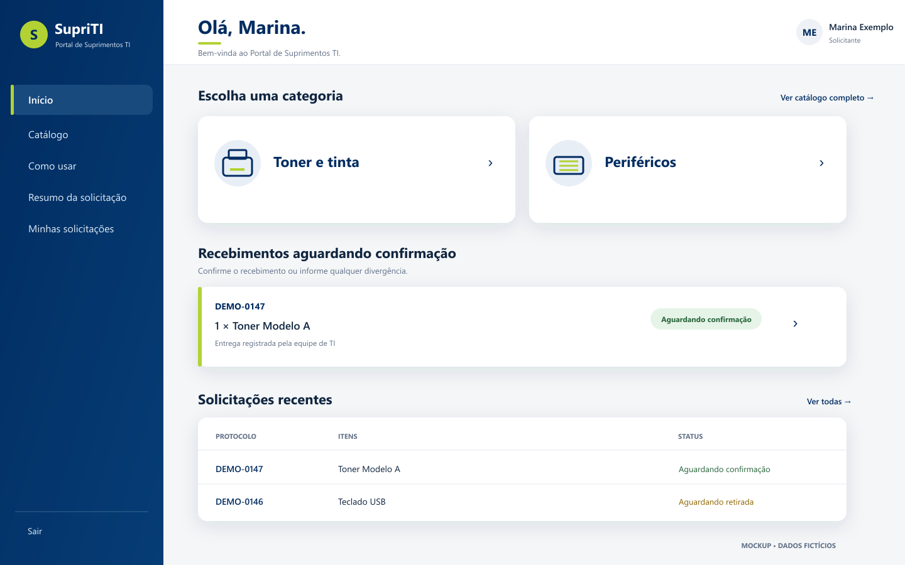
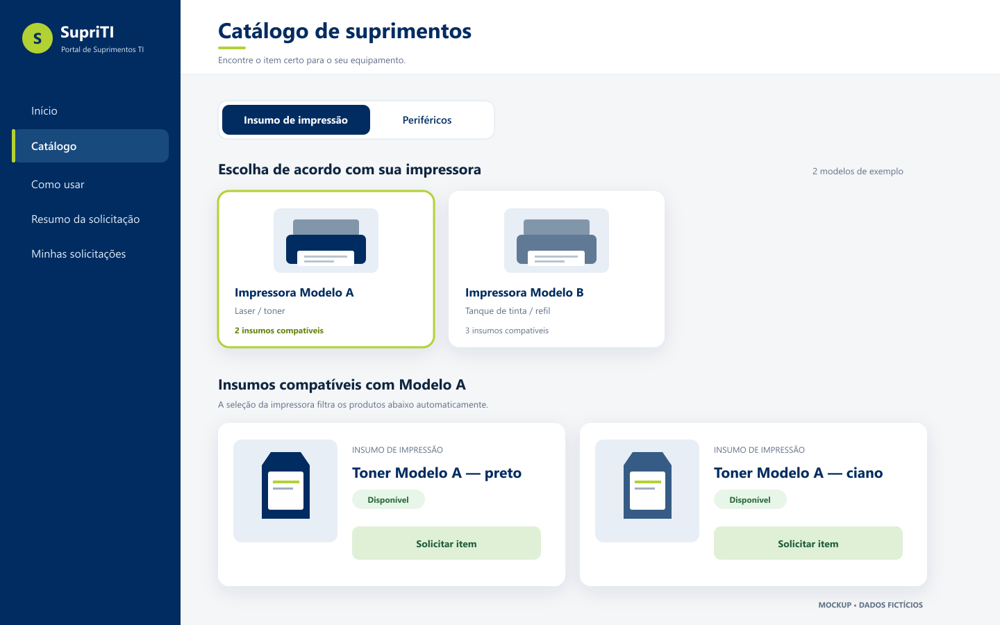
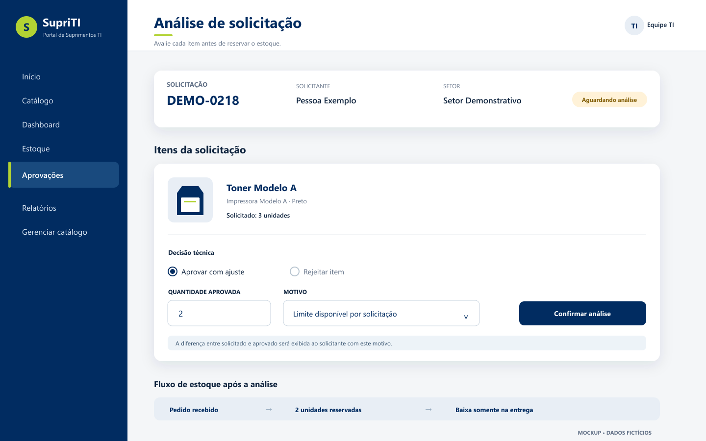
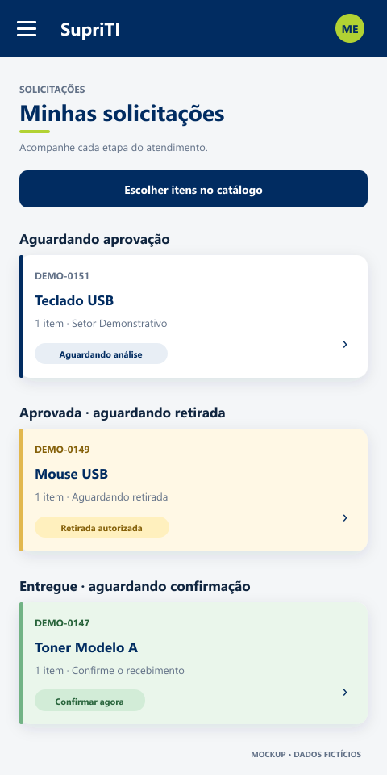

Transações de estoque
Aprovação, reserva, entrega, kits e importação foram tratados como operações consistentes, inclusive sob concorrência.
Um portal que conecta catálogo, solicitação, aprovação, estoque e confirmação em um fluxo rastreável.
Imagens ilustrativas com dados fictícios; não são capturas de produção.
A distribuição de toners era registrada apenas em papel, com um histórico frágil que podia se perder. Para os demais insumos, não havia rastreabilidade completa. A gestão precisava saber o que foi solicitado, aprovado e entregue, por quem e para qual setor.
O SupriTI foi desenvolvido como um portal web interno para conectar essas duas perspectivas. A solução reúne catálogo, solicitações, análise técnica, estoque, entrega, confirmação e relatórios em um fluxo único.
O solicitante seleciona uma impressora para ver apenas os insumos compatíveis. Produtos internos podem ficar ocultos desse perfil sem sumir da operação da equipe de TI.


O sistema separa pedido, reserva e baixa física. Aprovar reserva; registrar a entrega baixa o estoque; confirmar ou contestar encerra o ciclo com o solicitante.
Ajustes e retificações preservam justificativa e histórico. Kits virtuais são calculados a partir dos componentes reais, sem duplicar saldos.
Os pedidos são agrupados por etapa. O solicitante consegue distinguir o que aguarda análise, o que está disponível para retirada e o que exige sua confirmação.
Essa clareza reduz a distância entre a decisão técnica e o entendimento de quem fez o pedido.

Aprovação, reserva, entrega, kits e importação foram tratados como operações consistentes, inclusive sob concorrência.
O perfil e a visibilidade do item são conferidos pela API, não apenas por esconder botões na interface.
Backups, verificações de saúde, migrações versionadas e restauração documentada entraram no desenho da solução.
Uma interface Next.js/React conversa com uma API NestJS. PostgreSQL sustenta os dados relacionais e as transações; Prisma organiza o acesso e as migrações. O backend é um monólito modular: simples de operar, mas dividido por responsabilidades.
O portal reúne descoberta do item, solicitação, análise, estoque, entrega e confirmação. O histórico e o consumo por setor agora oferecem uma base para controlar e administrar melhor os gastos.
Conduzi o refinamento dos requisitos, as decisões de produto, a homologação e o acompanhamento da implantação, em um desenvolvimento iterativo com apoio de ferramentas de IA.